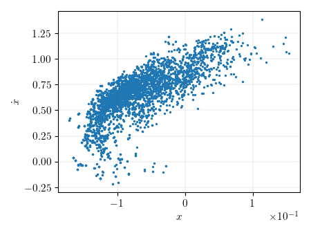

Note
Click here to download the full example code
Particle Filter Example
Progress: 0%| | 0/9 [00:00<?, ?it/s]
Progress: 0%| | 0/9 [00:01<?, ?it/s]
Progress: 11%|#1 | 1/9 [00:03<00:20, 2.61s/it]
Progress: 33%|###3 | 3/9 [00:03<00:04, 1.33it/s]
Progress: 56%|#####5 | 5/9 [00:04<00:01, 2.49it/s]
Progress: 78%|#######7 | 7/9 [00:04<00:00, 3.70it/s]
Progress: 100%|##########| 9/9 [00:04<00:00, 5.11it/s]
Progress: 100%|##########| 9/9 [00:04<00:00, 2.03it/s]
Time Elapsed: 4.430014610290527
Progress: 0%| | 0/9 [00:00<?, ?it/s]
Progress: 0%| | 0/9 [00:00<?, ?it/s]
Progress: 11%|#1 | 1/9 [00:06<00:45, 5.69s/it]
Progress: 22%|##2 | 2/9 [00:11<00:37, 5.29s/it]
Progress: 33%|###3 | 3/9 [00:17<00:33, 5.52s/it]
Progress: 44%|####4 | 4/9 [00:20<00:23, 4.76s/it]
Progress: 56%|#####5 | 5/9 [00:25<00:18, 4.75s/it]
Progress: 67%|######6 | 6/9 [00:30<00:14, 4.87s/it]
Progress: 78%|#######7 | 7/9 [00:35<00:09, 4.75s/it]
Progress: 89%|########8 | 8/9 [00:39<00:04, 4.50s/it]
Progress: 100%|##########| 9/9 [00:42<00:00, 4.10s/it]
Progress: 100%|##########| 9/9 [00:42<00:00, 4.72s/it]
Time Elapsed: 42.493728160858154
7 8 9 10 11 12 13 14 15 16 17 18 19 20 21 22 23 24 25 26 27 28 29 30 31 32 33 34 35 36 37 38 39 40 41 42 43 44 45 46 47 48 49 50 51 52 53 54 55 56 57 58 59 60 61 62 63 64 65 66 67 68 69 70 71 72 73 74 75 76 77 78 79 80 81 82 83 84 85 86 87 88 89 90 91 92 93 94 95 96 97 98 99 100 101 102 103 104 105 106 107 108 109 110 111 112 113 114 115 116 117 118 119 120 121 122 123 124 125 126 127 128 129 130 131 132 133 | import os
import sys
import time
import copy
import matplotlib.pyplot as plt
import matplotlib
import numpy as np
from scipy.integrate import solve_ivp
from StatOD.data import get_example8_measurements, get_measurements
from StatOD.dynamics import *
from StatOD.filters import *
from StatOD.measurements import *
from StatOD.rotations import ECI_2_RCI
from StatOD.utils import ECEF_2_ECI, latlon2cart
from StatOD.visualizations import *
from StatOD.constants import *
np.random.seed(1234)
def main():
######################
## Get Measurements ##
######################
numba = True
t, Y, x_truth, y_truth = get_example8_measurements(case=1)
t0 = t[0]
M_end = len(t) // 5
t = t[:M_end]
Y = Y[:M_end]
######################
## Set Parameters ##
######################
k = 1
eta = 1000
L = 5000 # particles
##############################
## Set State and Covariance ##
##############################
x0 = np.array([0.0, 1.0])
dx0 = np.array([0.0, 0.0])
x0 += dx0
P_diag = np.array(
[0.2, 0.2]
)**2
R_diag = np.array([0.1]) ** 2
P_0 = np.diag(P_diag)
R0 = np.diag(R_diag)
R_vec = np.full((len(t), R0.shape[0], R0.shape[1]), R0)
########################
## Configure Dynamics ##
########################
c_args = np.array([k, eta])
f, dfdx = dynamics(x0, f_spring_duffing, c_args, use_numba=numba)
h_args = np.array([])
h, dhdx = measurements(x0, spring_observation_1, h_args)
Q_args = []
Q0 = np.eye(2) * 1e-1 ** 2
Q_fcn = process_noise(x0, Q0, get_Q, Q_args, use_numba=False)
######################
## Configure Filter ##
######################
# Initialize
f_dict = {
"f": f,
"dfdx": dfdx,
"f_args": c_args,
"Q_fcn": Q_fcn,
"Q": Q0,
"Q_args": Q_args,
}
h_dict = {"h": h,
"dhdx": dhdx,
"h_args": h_args,
}
start_time = time.time()
logger = FilterLogger(len(x0), len(t))
filter = ExtendedKalmanFilter(t0, x0, dx0, P_0, f_dict, h_dict, logger=logger)
filter.run(t, Y, R_vec, np.full(len(t), None), np.empty((len(t),0)))
print("Time Elapsed: " + str(time.time() - start_time))
###############################
## Configure Particle Filter ##
###############################
x_0_k = np.random.uniform(-2,2,size=(L,2))
start_time = time.time()
logger = FilterLogger(len(x0), len(t))
filter = ParticleFilter(t0, x_0_k, f_dict, h_dict, logger=logger)
filter.run(t, Y, R_vec, np.full(len(t), None), np.empty((len(t),0)))
print("Time Elapsed: " + str(time.time() - start_time))
##############
## Plotting ##
##############
plt.figure()
plt.scatter(filter.x_i_m1[:,0], filter.x_i_m1[:,1], s=2)
plt.ylabel(r"$\dot{x}$")
plt.xlabel(r"$x$")
plt.show()
if __name__ == "__main__":
main()
|
Total running time of the script: ( 0 minutes 50.090 seconds)